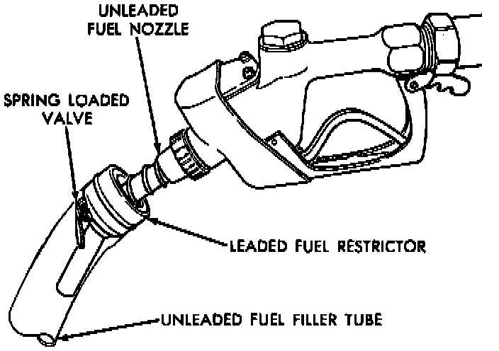

Fillpipe Restrictor: Description and Operation
Fillpipe Restrictor:

The fillpipe restrictor is used to prevent leaded fuel from being added to the fuel tank. The gasoline pump for unleaded fuel has a smaller nozzle. The fillpipe restrictor will only allow the unleaded type nozzle to be inserted into the fuel tank.